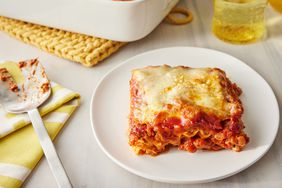

Lasagna

Description
This classic recipe of lasagna is one your whole family will love. It uses the most common ingredients that can be purchased at any local market of convient store! You'll wish your grandmothers could be this good.
Some ingredients can be subsituted for more organic or allergy conscious ingredients as needed. Happy Cooking!
Ingredients
- lasagna noodles
- ground beef
- garlic
- spaghetti sauce
- parmesan cheese
Steps
- Set oven to 350 degrees
- Cook lasagna noodles for 3 mintues after water comes to a boil
- Cook ground beef while lasagna noodles cook
- After ground beef and lasagna noodles are cooked start stacking
- Once your lasagna is stacked put in oven for 35 minutes or until cheese on top is golden brown
- Serve with garlic toast